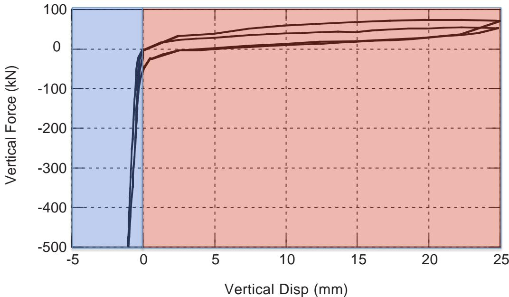
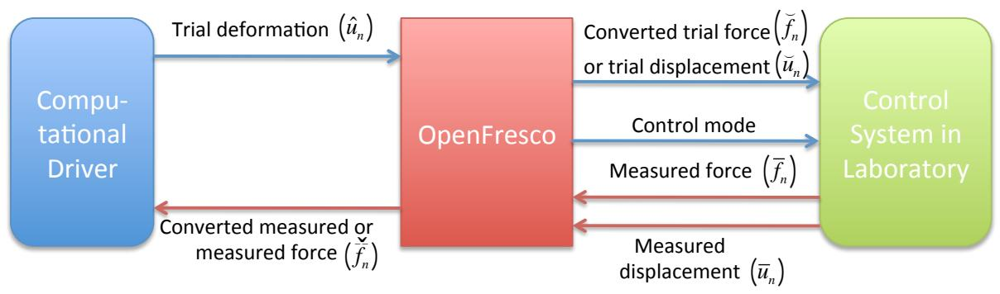
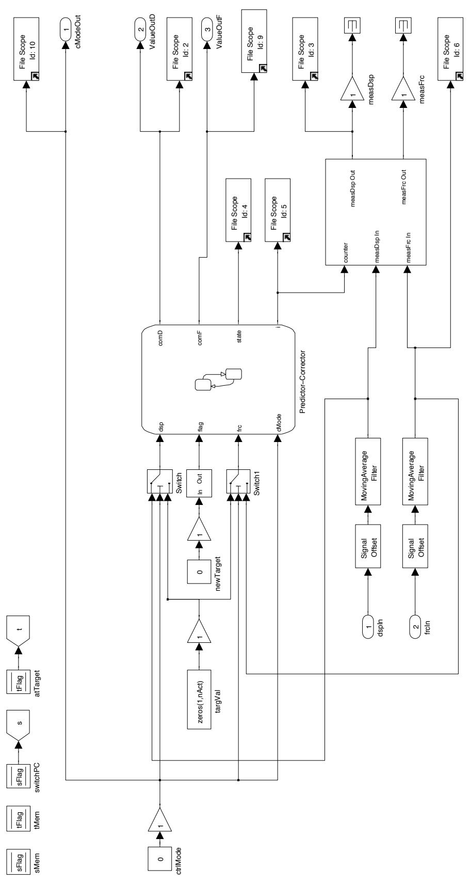
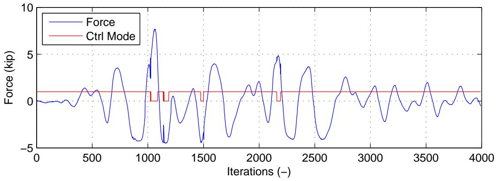
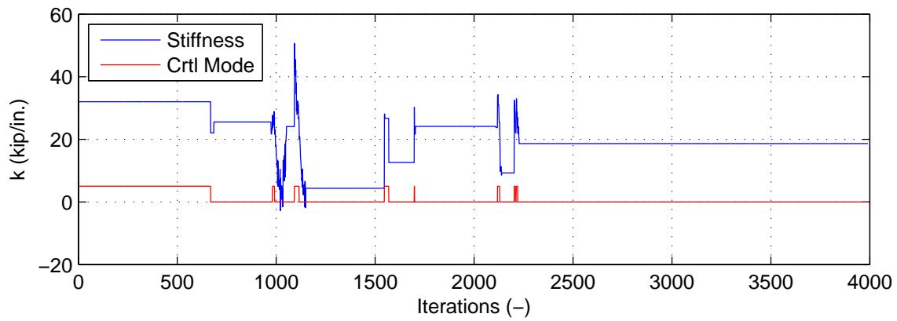
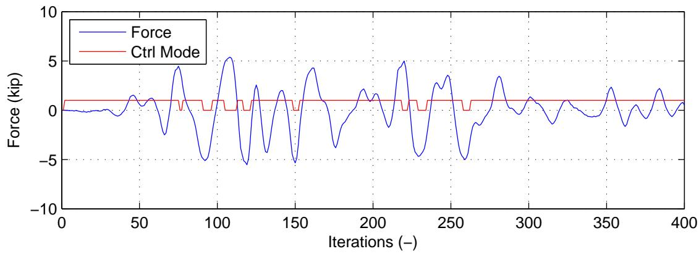
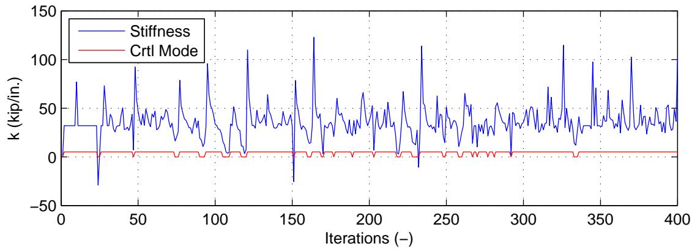

第 4 章 换控制混合仿真
本章讨论切换控制（SC）混合仿真。首先定义SC混合仿真并阐述其挑战。介绍SC混合仿真的动机，并综述以往的研究。提出SC混合仿真的方法。然后详细描述使用OpenFresco和Mathworks Simulink/Stateflow实现这些方法的过程。SC方法在nees@berkeley实验室使用1自由度\(\mu\)-NEES实验装置进行测试。本章最后展示和讨论SC混合仿真测试的实验结果。
4.1 引言
4.1.1 问题定义
SC混合仿真是一种在混合仿真过程中执行器控制模式发生改变的混合仿真。例如，执行器可能在仿真开始时处于位移控制模式。在仿真过程中，由于本章后面讨论的各种原因，执行器可能需要改变或切换到力控制模式。根据被测试试件和所使用的执行器，控制模式可能在仿真过程中多次改变。虽然可以考虑多种控制模式用于SC混合仿真，但本章仅处理位移和力控制模式。
SC混合仿真具有第3.1.1节中提出的FC混合仿真的相同挑战，因为部分仿真可能处于力控制模式。除了FC混合仿真的挑战之外，还存在确定仿真过程中执行器控制模式切换标准的挑战。对于给定的标准，何时启动控制模式切换的问题就会出现。当试件状态在切换点附近振荡时，可能发生不必要的控制模式切换。这可能会产生不可靠的结果，并可能导致控制系统在测试过程中变得不稳定。控制系统必须能够在测试过程中实时切换控制模式，并能够对试件充分施加位移和力。
4.1.2 动机
当试件响应发生变化导致当前控制模式不足时，混合仿真过程中需要切换控制模式。图4.1显示了高阻尼橡胶支座（HDBR）的滞回曲线。使用位移-力混合控制的在线测试对此类试件进行混合仿真需要在仿真过程中切换控制模式。试件

图4.1：高阻尼橡胶支座（HDBR）的典型滞回曲线。HDRB在压缩和拉伸状态下垂直加载。
对橡胶施加垂直载荷至25mm的垂直伸长（对应于一定的拉伸应变），然后卸载。此加载重复两次，获得的力-位移关系绘制在图11中。如图所示，试件在HDBR处于压缩状态的蓝色区域非常刚性。试件在进入红色区域时变得柔软得多，此时处于拉伸状态。对于此类试件，在整个混合仿真测试中使用单一控制模式是不够的。如果试件仅在DC模式下测试，当试件进入蓝色区域时，控制系统无法充分施加小位移。另一方面，如果试件仅在FC模式下，当试件进入红色区域时，控制系统无法施加小力。在单次混合仿真测试中必须使用两种控制模式。需要一种在控制模式之间切换的机制。HDBR表现出的这种行为在结构测试中的其他试件中也很常见。许多试件在测试过程中屈服并变软。在大多数情况下，使用DC模式的执行器进行测试是令人满意的。然而，在某些情况下，试件初始非常刚性，FC模式更适合该任务。在混合仿真中，通常对创新的结构构件进行实验测试，这种具有非常刚性试件的情况可能较为常见。
4.1.3 以往研究
有一些但不多研究人员进行过SC混合仿真。Pan等人[18]作为他们在第3.1.3节中介绍的研究的一部分，对HDBR在垂直加载方向进行了SC混合仿真。他们使用试算力的符号作为在力和位移控制模式之间切换的标准。由于他们通过运行准静态循环测试预先了解HDBR的滞回行为，他们知道该支座在压缩时非常刚性，在拉伸时非常柔软。当试算力为负或处于压缩状态时，他们使用力控制。当试算力为正或处于拉伸状态时，他们使用位移控制。强制执行加载限制以防止大的试算力和位移施加到试件上。
Elkhoraibi和Mosalam[7]也作为他们在第3.1.3节中介绍的研究的一部分进行了切换控制混合仿真。算法4.1显示了在每个时间步\(n\)切换控制模式的算法。Elkhoraibi和Mosalam使用了两个在位移和力控制模式之间切换的标准：割线刚度\(k\)和恢复力\(f\)。切换阈值事先定义。测量的刚度\(k_i\)和力\(f_i\)与切换阈值进行比较。\(k_d\)和\(k_f\)分别是位移和力的刚度阈值，其中\(k_d < k_f\)。恢复力阈值\(f_d\)和\(f_f\)以相同方式设置。缓冲区域防止了由\(k\)的小波动引起的来回切换。
Algorithm 4.1 Elkhoraibi和Mosalam[7]的时间步\(n\)模式切换算法
定义限制\(k_{d},K_{f},f_{d}\)和\(f_{f}\)，其中\(k_{d} < k_{f}\)且\(f_{d} < f_{f}\)
计算\(k_{n}\)和\(f_{n}\)
如果\(\text{ctrl}_{n - 1} = \text{DC}\)则
如果\(k_{n} > k_{f}\)且\(|f_n| > f_f\)则
设置\(\text{ctrl}_n = \text{FC}\)
否则
设置\(\text{ctrl}_n = \text{ctrl}_{n - 1}\)
结束如果
否则如果\(\text{ctrl}_{n - 1} = \text{FC}\)则
如果\(k_{n} < k_{d}\)或\(|f_n| < f_d\)则
设置\(\text{ctrl}_n = \text{DC}\)
否则
设置\(\text{ctrl}_n = \text{ctrl}_{n - 1}\)
结束如果
结束如果
4.2 SC混合仿真的方法
SC混合仿真的方法与第3.2节讨论的FC混合仿真方法相关联，因为部分仿真处于FC模式。本节介绍的每种切换策略都利用所有不同的FC方法。本节开发了两种类型的切换策略。第一种是基于试算力的切换。第二种是基于试件割线刚度的切换。两种策略都必须包含缓冲区域以避免不必要的控制模式切换或控制模式抖动。每种策略都有其优点和缺点。
4.2.1 基于试算力的切换策略
执行器控制模式的切换可以基于计算的试算力。这确实是Pan等人[18]所做的。在仿真开始前确定预定义的切换限制。当达到此限制或阈值时，控制模式切换。切换限制可以来自任何响应量，如位移、速度、加速度和力。速度和加速度不是好的候选，因为它们难以控制。使用位移值作为切换限制更可行。位移值相对容易控制和读取。然而，基于位移值进行切换并不是结构测试中的最佳方式。试件经常经历永久变形，导致位移偏移。在这种情况下，试件偏离线性时的位移限制发生变化。预定义的位移切换限制不再能准确检测试件行为的变化。
基于计算的试算力\(\breve{f}\)切换控制模式优于基于试算位移\(\breve{u}\)切换。确实，随着一些试件在测试过程中经历越来越多的损伤，其承受施加力的能力会退化。因此，预定义的力切换限制不再有效。然而，试件抗力的退化通常比混合仿真测试过程中发生的永久变形更加渐进和可预测。这种退化可以通过缩放力限制来预测。试算力使用第3.2节介绍的方法计算。
软化和硬化试件确定控制模式的算法分别显示在算法4.2和4.3中。这些是Elkhoraibi和Mosalam[7]开发的算法4.1的修改版本。在此算法中实现了缓冲，以避免当连续试算力接近力限制时控制模式抖动。\(f_d\)和\(f_f\)分别是从FC模式切换到DC模式和从DC模式切换到FC模式的力限制。\(f_d\)和\(f_f\)在仿真开始前预定义，必须仔细确定。如果\(f_d\)和\(f_f\)之间的跨度太大，控制模式可能无法正确切换。另一方面，如果跨度太小，则无法避免控制模式抖动。
力限制切换的一个优点是它易于实现且算法简单。它对某些类型的试件效果很好。一个主要缺点是，需要预先了解试件的行为才能有效设置力限制和缓冲参数。本质上，研究人员必须知道试件行为何时会改变。因此，当试件行为未知或无法进行合理预测时，力限制切换不适用。
Algorithm 4.2 软化试件在时间步\(n\)的力限制切换策略
定义限制\(f_{d}\)和\(f_{f}\)，其中\(f_{d}>\)
计算\(\check{f}_n\)
如果ctrlMode \(n - 1 = \text{DC}\)则
如果\(|\check{f}_n| < f_f\)则
设置ctrlMode \(n = \text{FC}\)
否则
设置ctrlMode \(n =\) ctrlMode \(n - 1\)
结束如果
否则如果ctrlMode \(n - 1 = \text{FC}\)则
如果\(|\check{f}_n| > f_d\)则
设置ctrlMode \(n = \text{DC}\)
否则
设置ctrlMode \(n =\) ctrlMode \(n - 1\)
结束如果
结束如果
Algorithm 4.3 软化试件在时间步\(n\)的力限制切换策略
定义限制\(f_{d}\)和\(f_{f}\)，其中\(f_{d} < f_{f}\)
计算\(\check{f}_{n}\)
如果ctrlMode \(n - 1 = \text{DC}\)则
如果\(|\check{f}_n| > f_f\)则
设置ctrlMode \(n = \text{FC}\)
否则
设置ctrlMode \(n =\) ctrlMode \(n - 1\)
结束如果
否则如果ctrlMode \(n - 1 = \text{fFC}\)则
如果\(|\check{f}| < f_d\)则
设置ctrlMode \(n = \text{DC}\)
否则
设置ctrlMode \(n =\) ctrlMode \(n - 1\)
结束如果
结束如果
4.2.2 基于割线刚度的切换策略
割线刚度值可用作切换控制模式的标准。割线刚度值给出切线刚度值的估计。它可用于检测试件的软化或硬化行为。时间步\(n\)的割线刚度值计算为\(sec_n = (\bar{f}_{n-1} - \bar{f}_{n-2}) / (\bar{u}_{n-1} - \bar{u}_{n-2})\)。该值从前两个时间步的测量位移和力值计算，不使用任何子步的值。一旦确定了切换的割线限制，它的工作方式与硬化试件的力限制切换相同。然而，这一个算法对软化和硬化试件都适用。算法4.4显示了割线限制切换中确定控制模式的策略。\(k_d\)和\(k_f\)分别是从FC切换到DC和从DC切换到FC的割线刚度限制。割线刚度的绝对值\(sec_n\)不用于确定控制模式。这是因为无论这些值的大小如何，对于开始表现出负刚度值的试件都使用DC。
Algorithm 4.4 时间步\(n\)的割线限制切换策略
定义限制\(k_{d}\)和\(k_{f}\)，其中\(k_{d} < k_{f}\)
计算\(\sec n\)
如果ctrlMode \(n - 1 = \text{DC}\)则
如果\(\sec_n > k_f\)则
设置ctrlMode \(n = \text{FC}\)
否则
设置ctrlMode \(n =\) ctrlMode \(n - 1\)
结束如果
否则如果ctrlMode \(n - 1 = \text{FC}\)则
如果\(\sec_n < f_d\)则
设置ctrlMode \(n = \text{DC}\)
否则
设置ctrlMode \(n =\) ctrlMode \(n - 1\)
结束如果
结束如果
与力限制切换不同，实现此方法不需要预先了解试件的行为。该算法通过计算试件的割线刚度值来检测试件何时改变其行为。该值可以从控制系统的调谐参数确定。对于给定的一组控制系统调谐参数，可以确定控制系统在力控制下变得不稳定或跟踪性能下降的割线刚度值限制。这是因为试件的刚度对控制系统的比例增益有贡献。切换的割线限制不依赖于试件，而是依赖于控制系统。鉴于控制系统可能比试件更频繁地被重复使用，这比力限制切换是更有效的切换策略。割线限制切换的一个缺点是它容易受到虚假更新的影响，如第3章所讨论的。这可能导致混合仿真测试过程中不必要的控制模式切换。因此，必须使用滤波器来防止控制系统噪声导致
割线刚度值更新。
4.3 实现
如前所述，SC混合仿真使用FC混合仿真的方法。因此，每种SC策略都使用所有FC方法实现。力限制切换策略使用CFC和EFC方法。使用CFC方法的力限制切换策略称为点切换控制（PSC），因为切换发生在预定义的点。使用EFC方法的力限制切换策略称为平衡点切换控制（EPSC）。使用CFC和EFC方法的割线限制切换策略分别命名为割线切换控制（SSC）和平衡割线切换控制（ESSC）。
4.3.1 切换的兼容性方法
PSC和SSC策略在OpenFresco的ECxPCtargetSwitchCM实验控制类中实现。类定义与图A.6中给出的ECxPCtargetForce的类定义非常相似。OpenFresco从计算驱动器接收试算变形，如图4.2所示。在OpenFresco中，ECxPCtargetSwitchCM从实验设置类接收试算位移。然后使用CFC方法计算\(\breve{f}_n\)。\(\breve{f}_n\)通过算法4.2或4.3传递以设置控制模式。它将控制模式和适当的试算值发送到控制系统。

图4.2：SC混合仿真组件及其流程。
如果使用SSC，ECxPCtargetSwitchCM通过算法4.4传递\(sec_n\)以确定控制模式。\(sec_n\)在时间步\(n-1\)的获取方法中从前两个时间步\(n-1\)和\(n-2\)的测量位移和力对计算。使用测量值而不是试算值，因为测量值给出试件更准确的状态。由于试算力是从试算位移计算的，且只有一个施加到试件上，试算位移和力对不能给出试件准确的状态。至少一个未施加到试件上的试算值可能不等于其测量对应值。ECxPCtargetSwitchCM在计算下一个割线刚度计算的割线刚度值后存储测量对。如果增量测量位移和力不大于控制系统的噪声限制，则不更新割线刚度。
MTS-STS控制器在切换到另一种控制模式时将反馈值设置为新的零点。这意味着如果控制器处于DC模式且力反馈为1千磅，当切换到FC模式时，控制器将所有指令力偏移1千磅。例如，如果ECxPCtargetSwitchCM计算2千磅的试算力，MTS-STS控制器将尝试对试件施加3千磅。因此，ECxPCtargetSwitchCM对此行为进行补偿。它在内存中保留控制模式切换时的反馈值。然后在发送到控制器之前，用内存中的反馈值偏移试算值。继续前面的例子，当ECxPCtargetSwitchCM计算3千磅的试算力时，它将3千磅偏移2千磅并发送1千磅到控制器。控制器然后对试件施加3千磅。ECxPCtargetSwitchCM对DC和FC模式都这样做。MTS-STS不以任何方式偏移测量值，仅偏移指令值。
4.3.2 切换的平衡方法
EPSC和ESSC策略的大部分在Matlab中编程。它是第3.3.2节讨论内容的扩展。以下是SC混合仿真所需的附加函数：
• simpleYield - 此函数使用算法4.2或4.3在SC混合仿真期间设置控制模式，有一个例外。使用上一步的力而不是当前时间步计算的试算力来确定控制模式。第3.3.2节的位移时间积分和力时间积分方案是此函数的参数。每个时间步的位移和力作为主函数中的全局变量存储。主函数中的位移和力对被传递到为下一步选择的任何时间积分方案。此函数仅用于数值模型。 • simpleYieldExperimental - 这与simpleYield相同，但用于混合模型。由于与MTS-STS控制系统的交互，需要与第3.3.2节的Experimental元素不同的函数。 • secantUpdate - 此函数使用算法4.4确定控制模式。除此之外，它的操作与simpleYield函数相同。它具有位移时间积分和力时间积分方案的参数。此函数仅用于数值模型。 • secantUpdateExperimental - 此函数与secantUpdate相同，但用于混合模型和Experimental元素。
数值函数simpleYield和secantUpdate需要获得实际仿真如何进行的好概念，将地面运动缩放到适当水平而不超过控制系统限制。它对调试Matlab脚本也很有用。
OpenFresco中的ECxPCtargetSwitchEM实验控制类处理从Matlab函数到Simulink/Stateflow模型的所有通信。ECxPCtargetSwitchEM
从Matlab函数接收控制模式和适当的试算值。ECxPCtargetSwitchEM不确定控制模式。控制模式由Matlab函数设置，然后计算试算值。需要单独的实验控制用于平衡切换策略，因为与PSC和SSC不同，试算位移和力对不可用。试算力直接从EFC方法计算，而不是从试算位移计算。因此，在每个时间步只计算两个试算值中的一个。因此，ECxPCtargetSwitchEM不能与EPSC和ESSC一起使用。ECxPCtargetSwitchEM不需要滤波器。上一节讨论的偏移由simpleYieldExperimental和secantUpdatedExperimental函数执行。这就是为什么数值模型和混合模型需要单独的函数。ECxPCtargetSwitchEM不执行试算值的偏移。
4.3.3 Simulink/Stateflow模型
SC混合仿真的预测-校正Simulink/Stateflow模型相当复杂，因为它必须对两种控制模式进行预测和校正。图4.3显示了SC混合仿真的Simulink模型。它与FC Simulink模型（图4.3）的不同之处在于，SC Simulink模型写入三个不同的SCRAMNet存储位置：ctrl modes、displ cmds和force cmds。MTS-STS控制器读取ctrl modes存储位置中的0作为DC模式，1作为FC模式。
图4.4显示了图4.3中xPC Target Hybrid Controller (S1S1)块所表示的内容。ctrlMode（控制模式）和targVal（目标值）从ECxPCtargetSwitchCM或ECxPCtargetSwitchEM接收。所有控制策略对SC混合仿真使用相同的Simulink模型。测量位移和力的移动平均值被发送回OpenFresco实验控制对象。Switch和Switch1块根据控制模式将targVal或反馈值馈送到Stateflow模型。如果使用FC模式，Switch1块将frc（力）设置为targVal，Switch块将dsp（位移）设置为反馈位移。在DC模式下，Switch1块将反馈力设置为frc，Switch块将dsp设置为targVal。如果Switch和Switch1块未发送targVal，则它们发送到Stateflow模型的内容无关紧要，因为Stateflow模型最终会将这些值归零。
混合控制器

图4.3：在nees@berkeley实验室使用xPC Target实时工作室与SCRAMNet进行SC混合仿真的SimuLink模型。

图4.4：这表示为图4.3中的xPC Target Hybrid Controller (S1S1)。它包含Stateflow模型和
Stateflow模型（图4.5）执行位移和力的实际预测和校正。此Stateflow模型本质上将图3.10中的FC Stateflow模型和DC Stateflow模型连接在一起。图的顶部包含DC模式的CorrectDisp、PredictDisp和AutoSlowDownDisp状态。底部包含FC模式的相同三个状态。与其FC对应物中的flag变量一起，它还有另一个变量cMode，指定何时离开其当前状态以及下一步应该移动到哪个状态。flag让Stateflow模型知道何时设置了新的targVal。cMode是从OpenFresco接收的控制模式。
从Correct状态，它可以移动到相同控制模式或另一控制模式的Predict状态。从Predict状态，它可以移动到两个控制模式之一的Correct状态或相同控制模式的AutoSlowDown状态。从AutoSlowDown状态，它可以移动到相同控制模式的Correct状态或另一控制模式的Correct状态。这些移动由flag和cMode变量控制。
每次Stateflow模型进入其中一个Correct状态时，它使用C函数setNewDsp和setNewFrc分别存储dsp和frc值。这些存储值用于校正、预测和自动减速。S1S1混合控制器使用线性插值进行校正，使用线性外推进行预测和自动减速。Correct状态在Stateflow模型进入该状态时清零另一控制模式的存储值。这有助于控制模式的平滑切换。因为插值和外推使用先前存储的值，并且因为控制器在切换模式时用反馈值偏移，除非用于插值和外推的先前记录值被清零，否则控制模式的过渡不会平滑切换。否则，它将使用切换前的存储值和新目标值进行插值和外推。这会导致Correct和Predict状态功能不正确，因为零点已从控制模式切换中改变。所有SC混合仿真测试的仿真时间步设置为0.10秒。

图4.5：根据控制模式预测和校正位移或力的Flow预测-校正模型。它具有自动减速功能以防止
4.4 实验结果与验证
第3章中的相同单跨框架混合模型用于SC混合仿真。此模型在图2.1中展示，其属性在表3.3中提供。表2.1中的相同OpenFresco配置也被利用，实验控制类除外。不使用xPCtarget和xPCtargetForce，而是使用xPCtargetSwitchCM和xPCtargetSwitchEM。第3章中的1自由度\(\mu\)-NEES实验设置（图3.11）带有两个夹具中的试件（图3.13）用于这些测试。
SC混合仿真仅使用单跨框架模型和1自由度\(\mu\)-NEES设置进行，而不使用2自由度模型和2自由度\(\mu\)-NEES设置。应为每个控制自由度单独考虑控制模式切换。假设所有控制自由度在整个仿真中同时切换到相同控制是不明智的。当有多个控制自由度时，最好使用混合控制混合仿真。此主题在下一章讨论。仅进行非线性混合仿真以测试SC混合仿真方法，因为仅当1自由度设置开始软化时才需要SC混合仿真。因此，地面运动缩放到40%，与FC非线性混合仿真结果进行比较。
SC混合仿真实验使用表3.2中参数的NME、αOS、NMF和NMR时间积分方案。这些结果与图3.17和3.18以及表3.8中的OpenSees数值结果进行比较。如前一章所述，NME和αOS在1自由度OpenSees数值模型中不收敛（图3.16）。因此，NME和αOS实验结果与NMR数值结果进行比较。NME和αOS时间积分方案使用20个子步以防止控制系统变得不稳定。表4.1和4.2分别显示了与数值对应物的位移和力误差。这些表包含绝对误差的最小值、平均值和最大值。支持这些误差值的图在附录D中提供。第3章中的DC和FC误差值也出现在这些表中用于比较。
对于PSC和EPSC混合仿真，4千磅是切换点，\(f_d\)和\(f_f\)设置为预定义切换点的10%。\(f_d = 4.4\)千磅和\(f_f = 3.6\)千磅。这些值从DC和FC混合仿真结果确定。4千磅是试件刚开始屈服的点。对于SSC和ESSC混合仿真，切换的割线刚度值为25千磅/英寸。\(k_d\)和\(k_f\)设置为25千磅/英寸的10%。测量位移和力以0.005滤波，意味着如果在给定时间步的增量测量位移和力不大于0.005，则不用于更新割线刚度。
首先查看表4.1和4.2中的结果，可以看到PCS和SSC策略对所有时间积分方案都有效，而CFC方法仅对NMF有效。CFC方法在FC混合仿真中对其他三种时间积分方案变得不稳定。EPSC和ESSC策略仍然仅与NMF配合使用。
DC误差最低，对于NME和αOS略优于SSC误差，但对于NMF和NMR则不是。SSC结果总体上更一致。EPSC和ESSC给出与SSC相当的NMR结果。PSC结果也非常可与其他结果相比，除了αOS结果。力误差给出与位移误差非常相似的结果。NME的DC误差最低。图4.6绘制了使用NME的PSC的试算力和控制模式。当控制模式为零时，处于DC模式。当控制大于零时，处于FC模式。它在仿真的大部分时间处于FC模式。每次控制模式从FC切换到DC时，试算力似乎有抖动。图4.7显示了割线刚度值的控制模式。与前一图不同，控制大部分时间处于DC模式。即使在对控制系统噪声进行滤波后，割线刚度值仍然有些噪声。使用SSC切换控制模式时，试算力不会抖动。这可以从附录D中MTS-STS控制器的指令和测量力图验证。图4.6和4.7与其他时间积分方案的PSC和SSC结果相似。
表4.1：各种时间积分方法在有限元分析水平上1自由度设置非线性SC混合仿真的位移结果绝对误差。包括DC、CFC和EFC结果用于比较。
控制方法 |
NME (英寸) |
αOS (英寸) |
NMF (英寸) |
NMR (英寸) |
|---|---|---|---|---|
DC-最小值 |
2.84×10⁻⁵ |
7.30×10⁻⁷ |
1.64×10⁻⁵ |
1.68×10⁻⁵ |
DC-平均值 |
0.0266 |
0.0288 |
0.114 |
0.0711 |
DC-最大值 |
0.116 |
0.118 |
0.357 |
0.253 |
CFC-最小值 |
N/A |
N/A |
1.14×10⁻⁵ |
N/A |
CFC-平均值 |
N/A |
N/A |
0.0409 |
N/A |
CFC-最大值 |
N/A |
N/A |
0.143 |
N/A |
PSC-最小值 |
2.12×10⁻⁵ |
6.34×10⁻⁶ |
2.11×10⁻⁵ |
2.49×10⁻⁵ |
PSC-平均值 |
0.0410 |
0.0816 |
0.0433 |
0.0422 |
PSC-最大值 |
0.104 |
0.300 |
0.204 |
0.147 |
SSC-最小值 |
8.00×10⁻⁶ |
1.40×10⁻⁵ |
6.67×10⁻⁵ |
6.94×10⁻⁶ |
SSC-平均值 |
0.0341 |
0.0315 |
0.0397 |
0.0419 |
SSC-最大值 |
0.112 |
0.122 |
0.177 |
0.150 |
EFC-最小值 |
N/A |
N/A |
N/A |
1.28×10⁻⁴ |
EFC-平均值 |
N/A |
N/A |
N/A |
0.0922 |
EFC-最大值 |
N/A |
N/A |
N/A |
0.280 |
EPSC-最小值 |
N/A |
N/A |
N/A |
6.02×10⁻⁵ |
EPSC-平均值 |
N/A |
N/A |
N/A |
0.0339 |
EPSC-最大值 |
N/A |
N/A |
N/A |
0.161 |
ESSC-最小值 |
N/A |
N/A |
N/A |
9.82×10⁻⁶ |
ESSC-平均值 |
N/A |
N/A |
N/A |
0.0322 |
ESSC-最大值 |
N/A |
N/A |
N/A |
0.0989 |
图4.8绘制了EPSC与NMR的控制模式和试算力随时间的变化。使用此策略切换控制模式时，试算力没有抖动。与PSC一样，控制模式的大部分处于FC模式。图4.9显示了ESSC与NMR的割线刚度。割线刚度值比SSC波动更大。这是因为没有使用滤波器进行割线更新。然而，ESSC不使用割线来计算试算力。与SSC对应物不同，控制模式在仿真的大部分时间处于FC模式。
表4.3中的控制系统误差说明，控制系统在FC模式下对SC混合仿真的跟踪优于FC混合仿真。SC混合仿真在两种控制模式下都有误差结果。
表4.2：各种时间积分方法在有限元分析水平上1自由度设置非线性SC混合仿真的力结果绝对误差。包括DC、CFC和EFC结果用于比较。
控制方法 |
NME (千磅) |
αOS (千磅) |
NMF (千磅) |
NMR (千磅) |
|---|---|---|---|---|
DC-最小值 |
0.00150 |
9.60×10⁻⁴ |
5.20×10⁻⁴ |
0.00972 |
DC-平均值 |
0.394 |
0.435 |
0.804 |
1.28 |
DC-最大值 |
2.03 |
2.08 |
4.05 |
5.42 |
CFC-最小值 |
N/A |
N/A |
6.65×10⁻⁴ |
N/A |
CFC-平均值 |
N/A |
N/A |
0.593 |
N/A |
CFC-最大值 |
N/A |
N/A |
2.34 |
N/A |
PSC-最小值 |
1.14×10⁻⁴ |
4.83×10⁻⁴ |
6.45×10⁻⁴ |
9.37×10⁻⁴ |
PSC-平均值 |
0.486 |
0.794 |
0.561 |
0.586 |
PSC-最大值 |
3.26 |
6.24 |
2.31 |
2.19 |
SSC-最小值 |
2.46×10⁻⁴ |
3.00×10⁻⁵ |
2.53×10⁻⁴ |
1.27×10⁻⁴ |
SSC-平均值 |
0.407 |
0.447 |
0.582 |
0.601 |
SSC-最大值 |
2.13 |
2.17 |
2.55 |
2.23 |
EFC-最小值 |
N/A |
N/A |
N/A |
0.00700 |
EFC-平均值 |
N/A |
N/A |
N/A |
1.26 |
EFC-最大值 |
N/A |
N/A |
N/A |
5.77 |
EPSC-最小值 |
N/A |
N/A |
N/A |
7.06×10⁻⁴ |
EPSC-平均值 |
N/A |
N/A |
N/A |
0.771 |
EPSC-最大值 |
N/A |
N/A |
N/A |
3.03 |
ESSC-最小值 |
N/A |
N/A |
N/A |
0.0012 |
ESSC-平均值 |
N/A |
N/A |
N/A |
0.702 |
ESSC-最大值 |
N/A |
N/A |
N/A |
2.79 |

图4.6：PSC与NME的控制模式和试算力随时间变化的图。


图4.7：PSC与NME的控制模式和割线刚度值随时间变化的图。

图4.8：EPSC与NMR的控制模式和试算力随时间变化的图。
图4.9：ESSC与NMR的控制模式和割线刚度值随时间变化的图。
DC和FC模式。SC混合仿真在DC模式下的跟踪性能与DC混合仿真相当。DC、FC和SC混合仿真结果在DC和FC模式中的误差值彼此相似。FC模式误差约为DC误差的34倍。34千磅/英寸是试件的线性刚度。附录D中NME、αOS、NMF的所有指令位移和力图对于混合仿真都是理想的。指令曲线相当平滑。所有类型混合仿真中NMR的指令位移和力图不理想，因为曲线非常锯齿状。这是NMI和NMR的常见行为，因为它们使用牛顿方法求解二次收敛的运动方程。第一次迭代通常产生大的指令值，后续值按比例减小。值得注意的是，所有MTS-STS位移和力误差图在控制器切换控制模式时都表现出测量值的尖峰。
总之，实验结果首先表明SC混合仿真是可实现的，控制模式的切换不会对结果产生不利影响。PSC、SSC、EPSC和ESSC结果与DC结果相当，优于FC结果。基于割线刚度的切换策略在有限元分析水平上产生略优于基于试算力的切换策略的结果。PSC和SSC混合仿真方法更稳健，因为它不会像CFC混合仿真方法那样对NME、αOS和NMR变得不稳定，尽管两者都使用相同的方法计算试算力。在控制系统水平上，所有类型混合仿真的两种控制模式中的总体跟踪性能与1自由度\(\mu\)-NEES实验设置同样良好。然而，NMR时间积分方案生成的指令值使其不适用于混合仿真。
表4.3：各种时间积分方案在控制系统水平上1自由度设置非线性SC混合仿真的绝对误差。包括DC、CFC和EFC结果用于比较。
控制方法 |
NME |
αOS |
NMF |
NMR |
|---|---|---|---|---|
DC-最小值 (英寸) |
1.38×10⁻⁹ |
7.86×10⁻⁹ |
7.94×10⁻⁹ |
3.14×10⁻⁹ |
DC-平均值 (英寸) |
8.53×10⁻⁴ |
8.20×10⁻⁴ |
0.00167 |
8.66×10⁻⁴ |
DC-最大值 (英寸) |
0.00513 |
0.00526 |
0.0129 |
0.0181 |
CFC-最小值 (千磅) |
N/A |
N/A |
0 |
N/A |
CFC-平均值 (千磅) |
N/A |
N/A |
0.0328 |
N/A |
CFC-最大值 (千磅) |
N/A |
N/A |
0.285 |
N/A |
PSC-最小值 (英寸) |
1.33×10⁻⁷ |
5.38×10⁻⁷ |
8.62×10⁻⁹ |
4.93×10⁻⁹ |
PSC-平均值 (英寸) |
0.00144 |
0.00277 |
9.25×10⁻⁴ |
7.83×10⁻⁴ |
PSC-最大值 (英寸) |
0.0480 |
0.0788 |
0.0219 |
0.0403 |
PSC-最小值 (千磅) |
2.38×10⁻⁷ |
2.38×10⁻⁷ |
1.79×10⁻⁷ |
0 |
PSC-平均值 (千磅) |
0.0452 |
0.0415 |
0.0278 |
0.0276 |
PSC-最大值 (千磅) |
0.565 |
1.29 |
0.371 |
0.770 |
SSC-最小值 (英寸) |
1.24×10⁻⁹ |
6.57×10⁻⁹ |
1.19×10⁻⁸ |
1.90×10⁻⁷ |
SSC-平均值 (英寸) |
0.00110 |
0.00124 |
0.00108 |
0.00248 |
SSC-最大值 (英寸) |
0.0126 |
0.00532 |
0.00957 |
0.0152 |
SSC-最小值 (千磅) |
3.73×10⁻⁸ |
2.24×10⁻⁸ |
5.96×10⁻⁸ |
0 |
SSC-平均值 (千磅) |
0.0393 |
0.0423 |
0.0272 |
0.0250 |
SSC-最大值 (千磅) |
0.183 |
0.141 |
0.358 |
0.494 |
EFC-最小值 (千磅) |
N/A |
N/A |
N/A |
0 |
EFC-平均值 (千磅) |
N/A |
N/A |
N/A |
0.0282 |
EFC-最大值 (千磅) |
N/A |
N/A |
N/A |
0.640 |
EPSC-最小值 (英寸) |
N/A |
N/A |
N/A |
9.00×10⁻⁸ |
EPSC-平均值 (英寸) |
N/A |
N/A |
N/A |
0.00152 |
EPSC-最大值 (英寸) |
N/A |
N/A |
N/A |
0.0162 |
EPSC-最小值 (千磅) |
N/A |
N/A |
N/A |
0 |
EPSC-平均值 (千磅) |
N/A |
N/A |
N/A |
0.0337 |
EPSC-最大值 (千磅) |
N/A |
N/A |
N/A |
0.141 |
ESSC-最小值 (英寸) |
N/A |
N/A |
N/A |
3.34×10⁻⁷ |
ESSC-平均值 (英寸) |
N/A |
N/A |
N/A |
0.00159 |
ESSC-最大值 (英寸) |
N/A |
N/A |
N/A |
0.01833 |
ESSC-最小值 (千磅) |
N/A |
N/A |
N/A |
0 |
ESSC-平均值 (千磅) |
N/A |
N/A |
N/A |
0.0336 |
ESSC-最大值 (千磅) |
N/A |
N/A |
N/A |
0.181 |